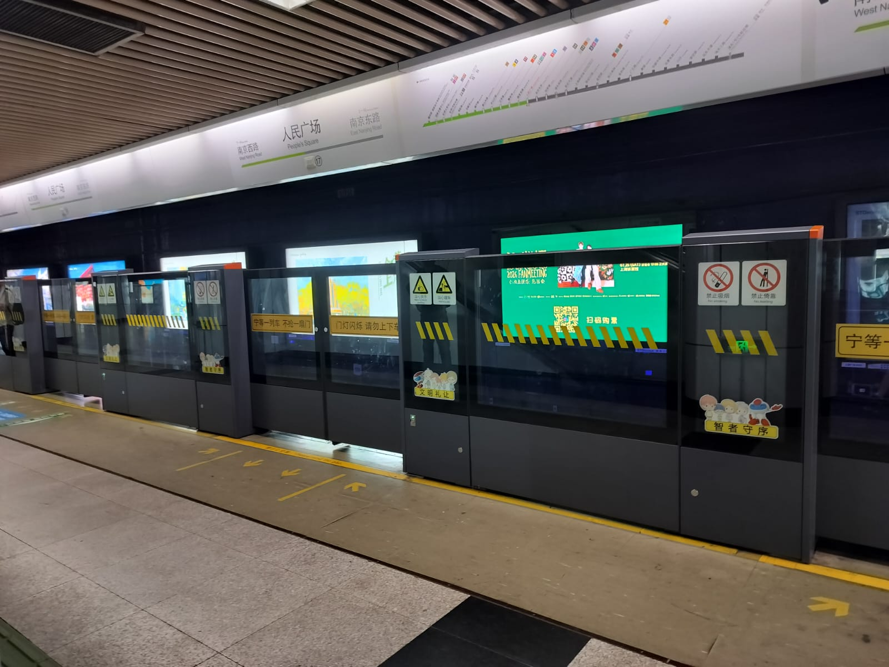
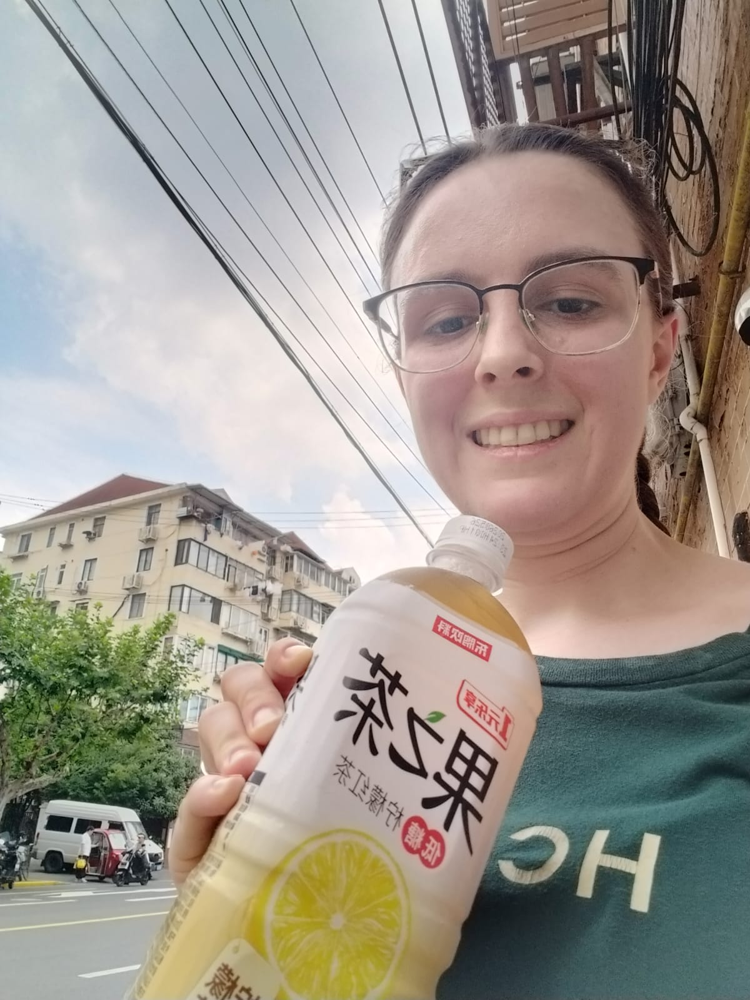
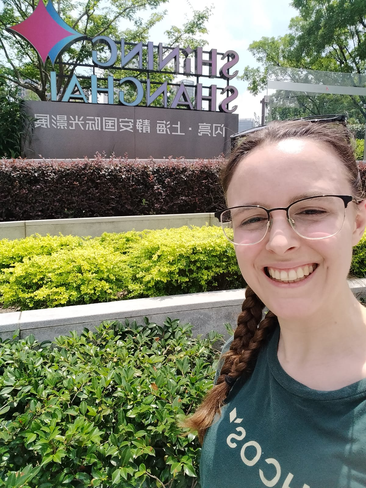
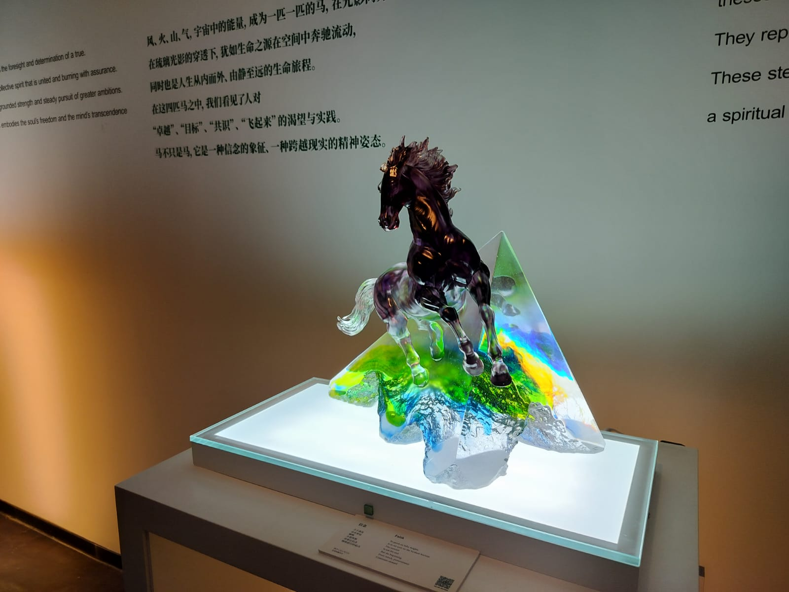
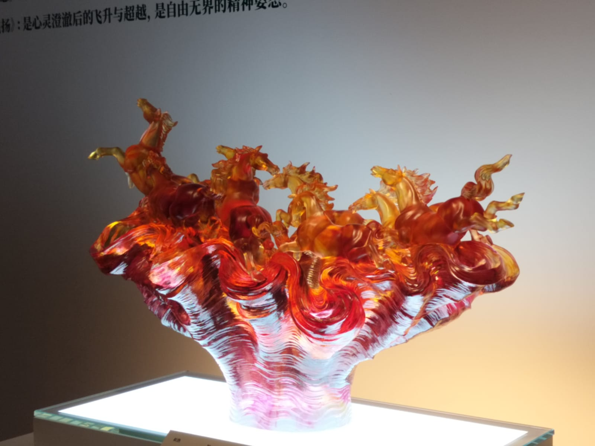
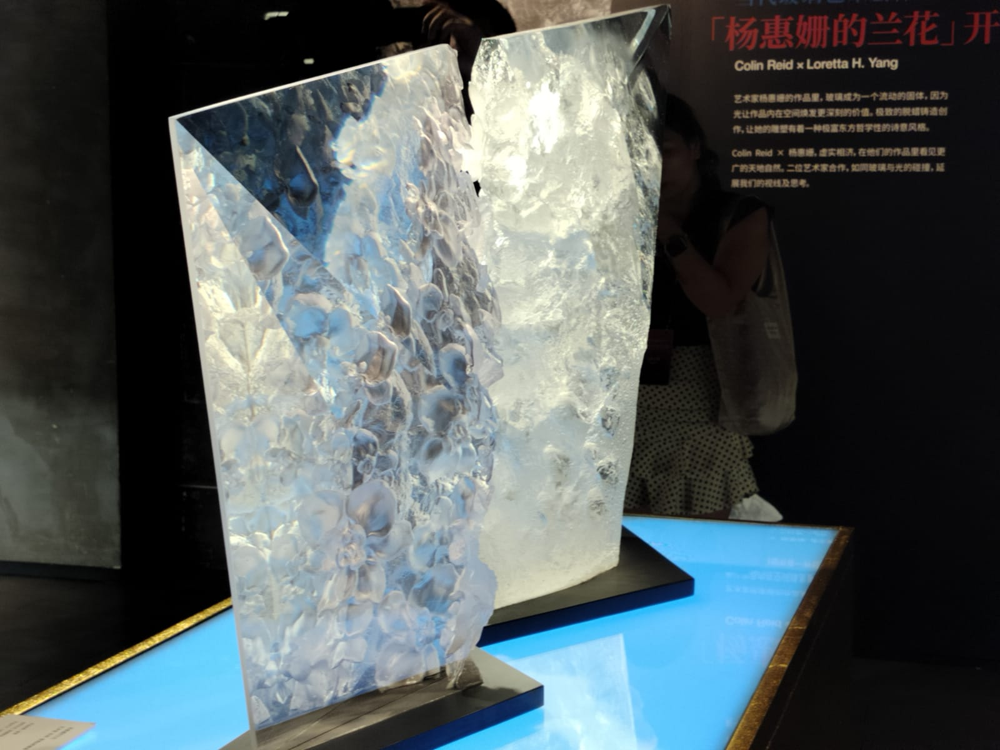
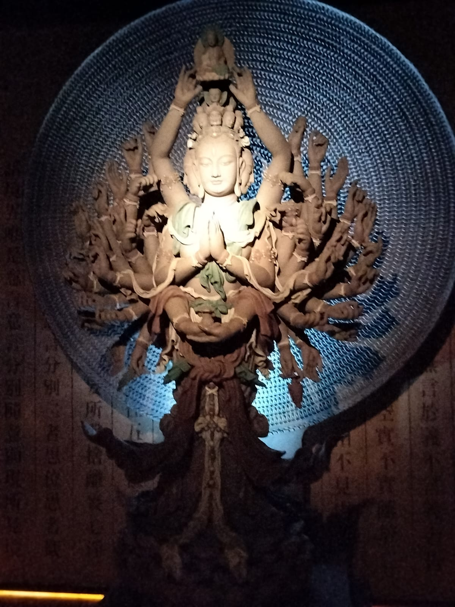
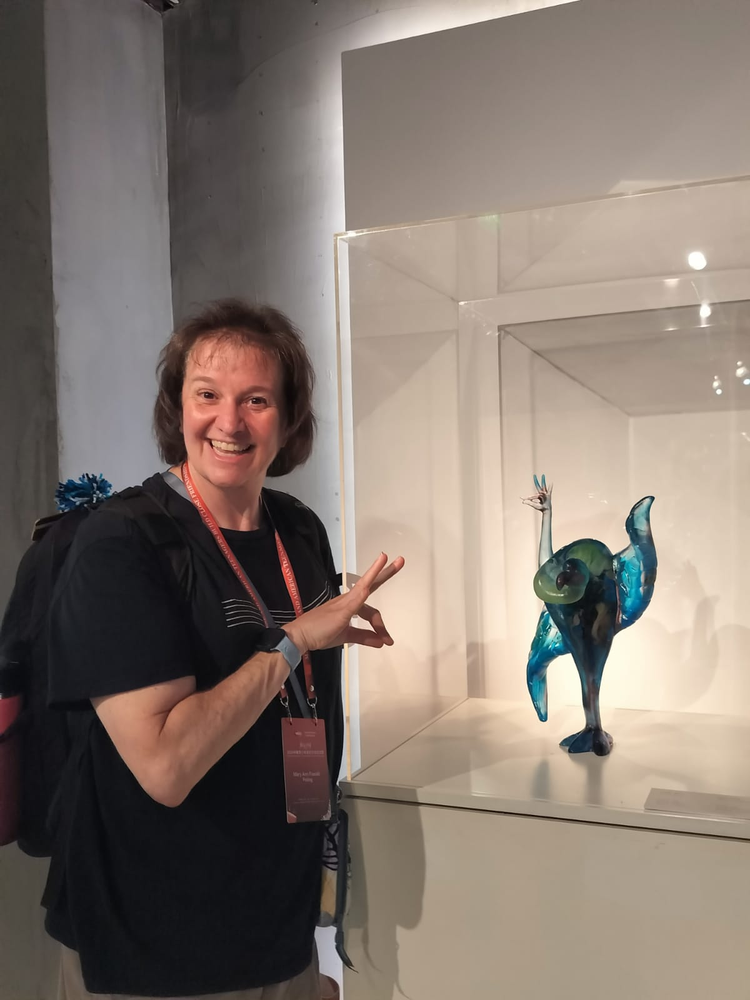
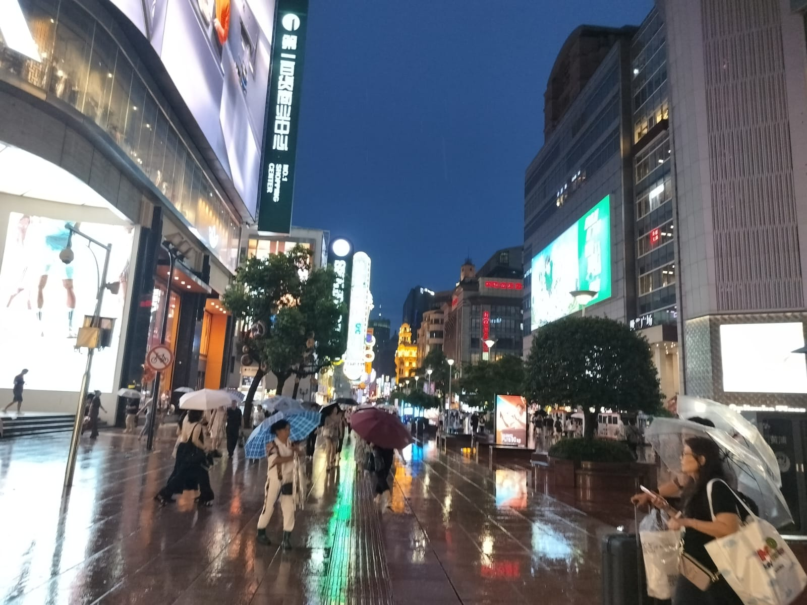
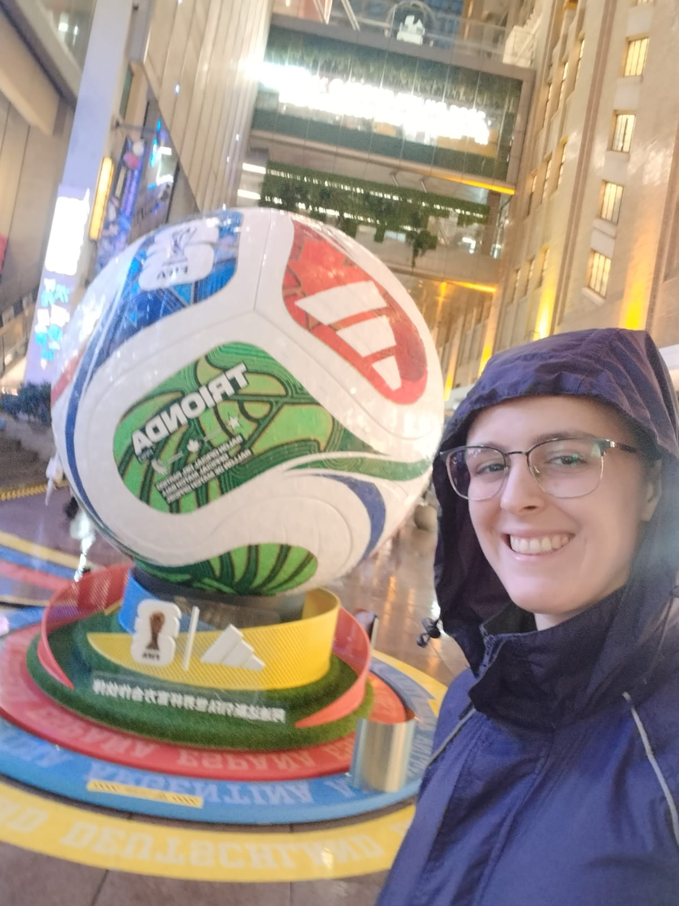

¡Mi primera mañana en Shanghái tenía una visita guiada de desayuno reservada!
Salí temprano del hotel porque no estaba segura de cuánto problema podría tener para ubicar el metro. Resulta que fue bastante sencillo. Tienen señalización increíble y todo está tanto en chino como en inglés.

Tour gastronómico
Mi tour era un tour de desayuno por la Concesión Francesa. Cuando China fue forzada a abrir sus fronteras por Gran Bretaña a principios de 1900, este barrio era donde vivía la mayoría de los extranjeros, así que aún conserva mucha arquitectura europea.
:::
Con la guía probamos:
- Tortita de cebolleta: pancakes hojaldrados rellenos de trozos de cebolleta y hechos con jugo de cebolleta en la masa. Estaba delicioso y fue mi favorito.
- Pescado explosivo: muy fresco, jaja. Lo mantienen en un tanque en el fondo, lo sacan con un cucharón, lo matan con un bate y lo fríen frente a ti. Se llama pescado explosivo porque el pescado salta un poco cuando se fríe. Después de freírlo dos veces lo empapan en una salsa a tu elección.
- Café de arroz suave: leche y arroz fermentado en el fondo con un café espumoso y polvo de chocolate encima.
- Xiaolongbao: dumplings de sopa. Simplemente deliciosos. Al parecer se necesitan 6 meses para aprender a envolverlos profesionalmente.
- Bollos pan-fritos estilo Shanghainés: al vapor arriba, crujientes abajo, con un exterior ligeramente fermentado. La técnica de fermentación es patrimonio cultural inmaterial.
- Rollito de huevo: pan con huevo adentro.
- Coro chino: como un churro, pero con arroz pegajoso en lugar de masa.
- Café: este café está mezclado con un poco de vino tinto, lo que le da un sabor... interesante. Tomamos este café en un café para perros. Rachel estaba feliz :).
Explorando Shanghái



¡Sra. Mary!
La Sra. Mary es una amiga cercana de la familia y prácticamente mi segunda madre. Casualidad, estaba en Shanghái los mismos días que yo. Viajaba con un grupo de música como parte de un programa de conexión entre China y EE. UU.
Pasamos un tiempo encantador charlando y poniéndonos al día, y pude viajar con su grupo a un museo de vidrio.






Cena
Estaba extremadamente cansada y hambrienta, pero fui a Nanjing Road (Times Square de Shanghai) y encontré un restaurante de Xiaolongbao. Me sentí mucho mejor después de la comida.

